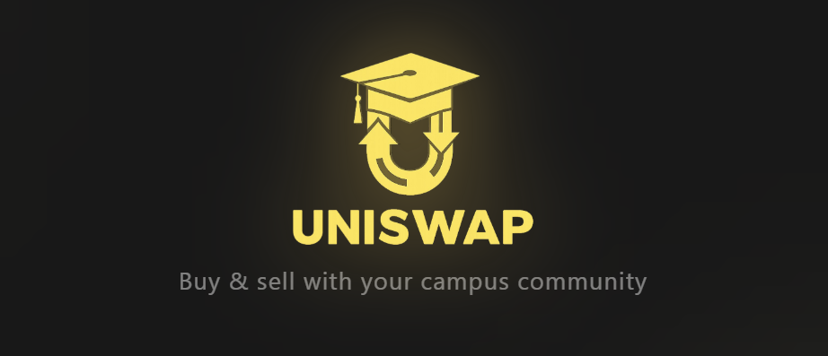
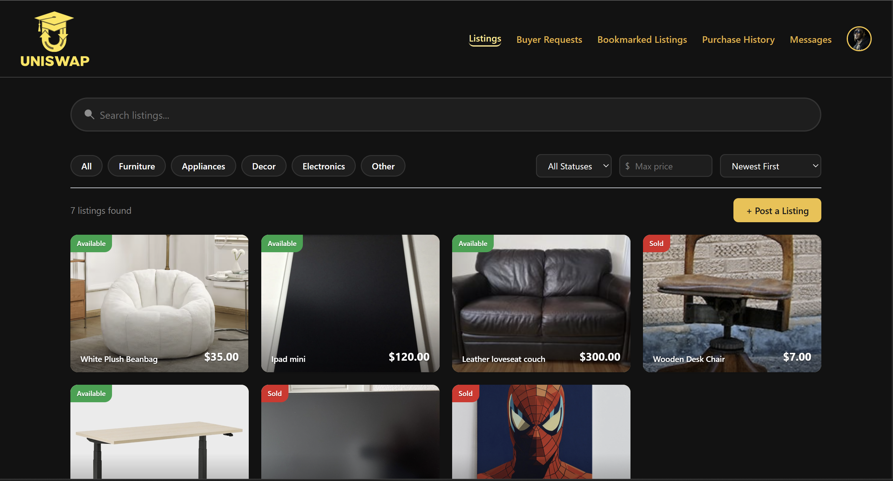
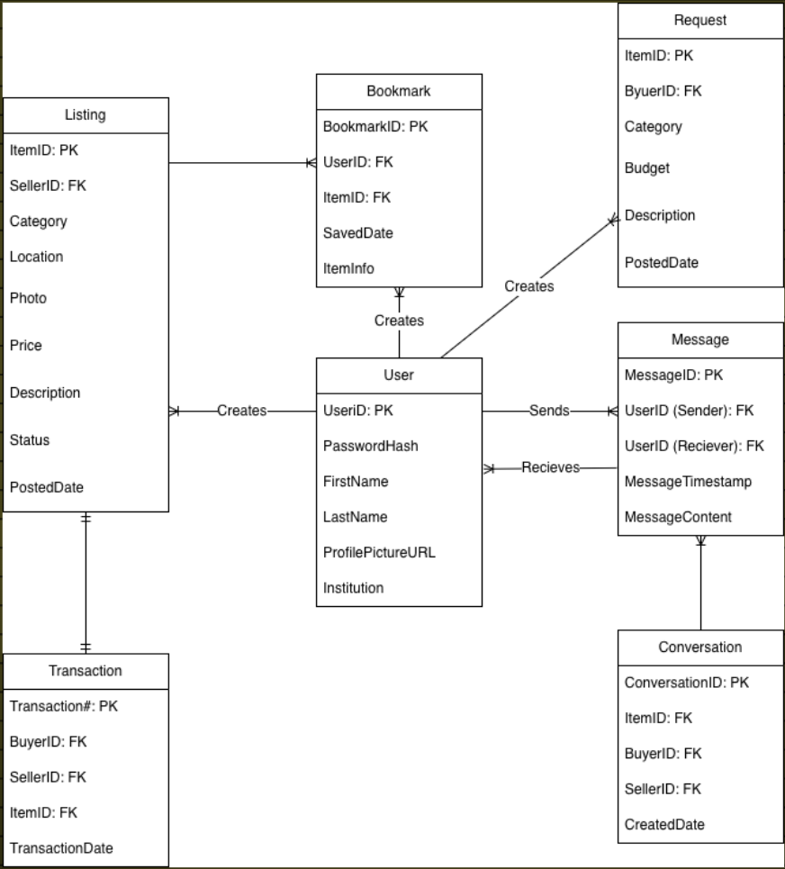
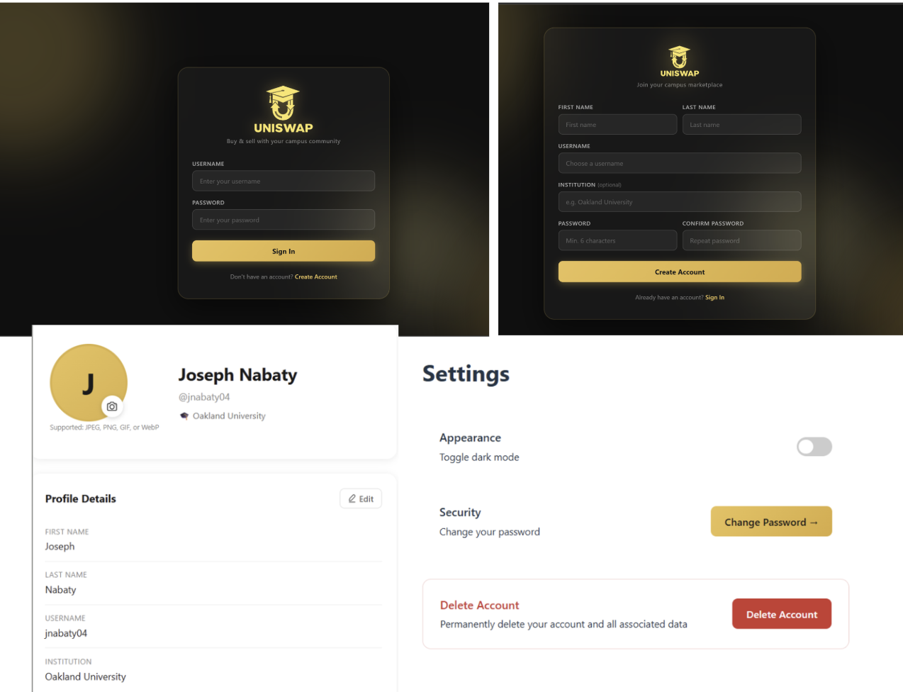
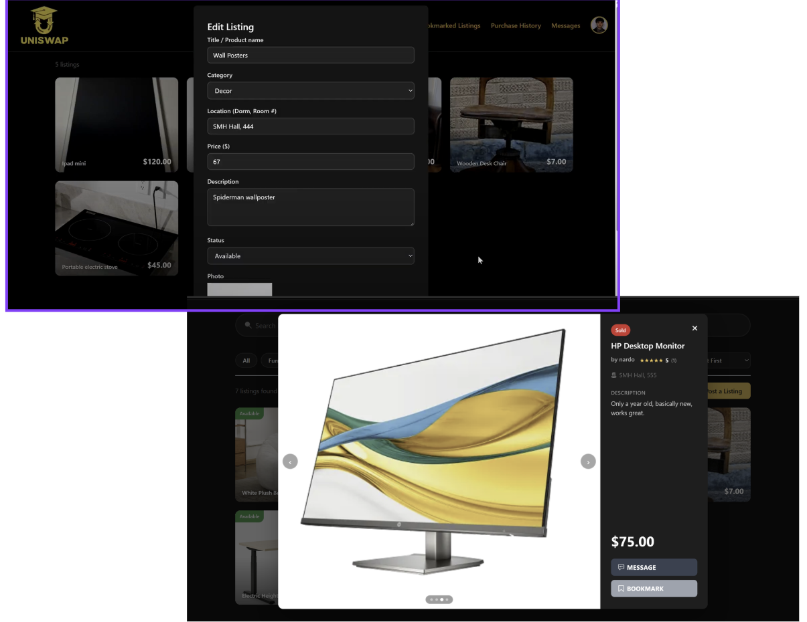
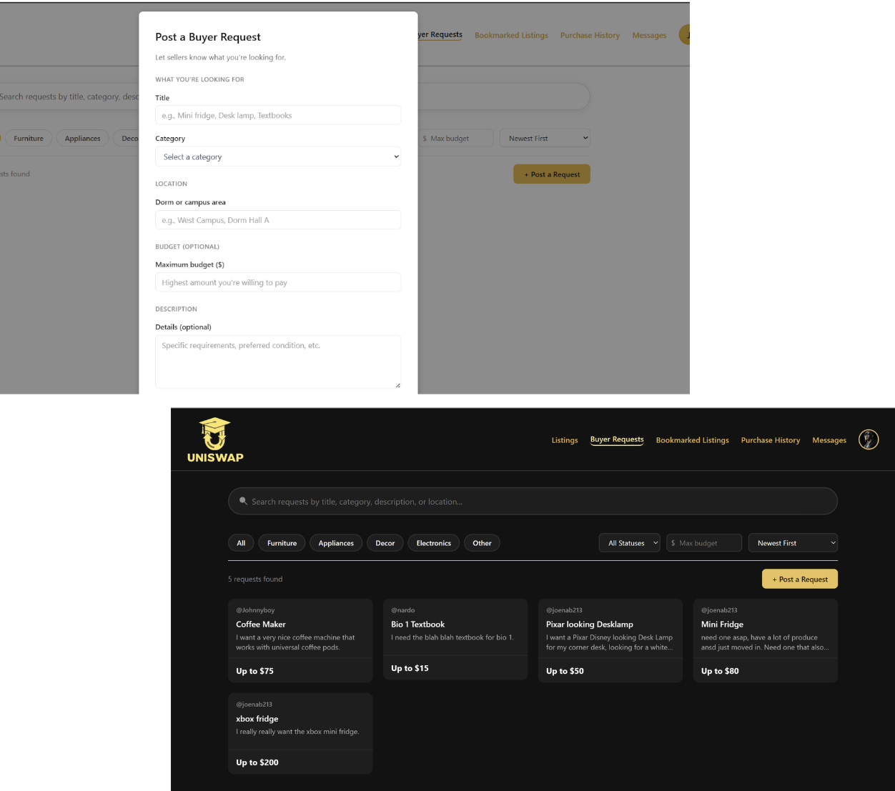
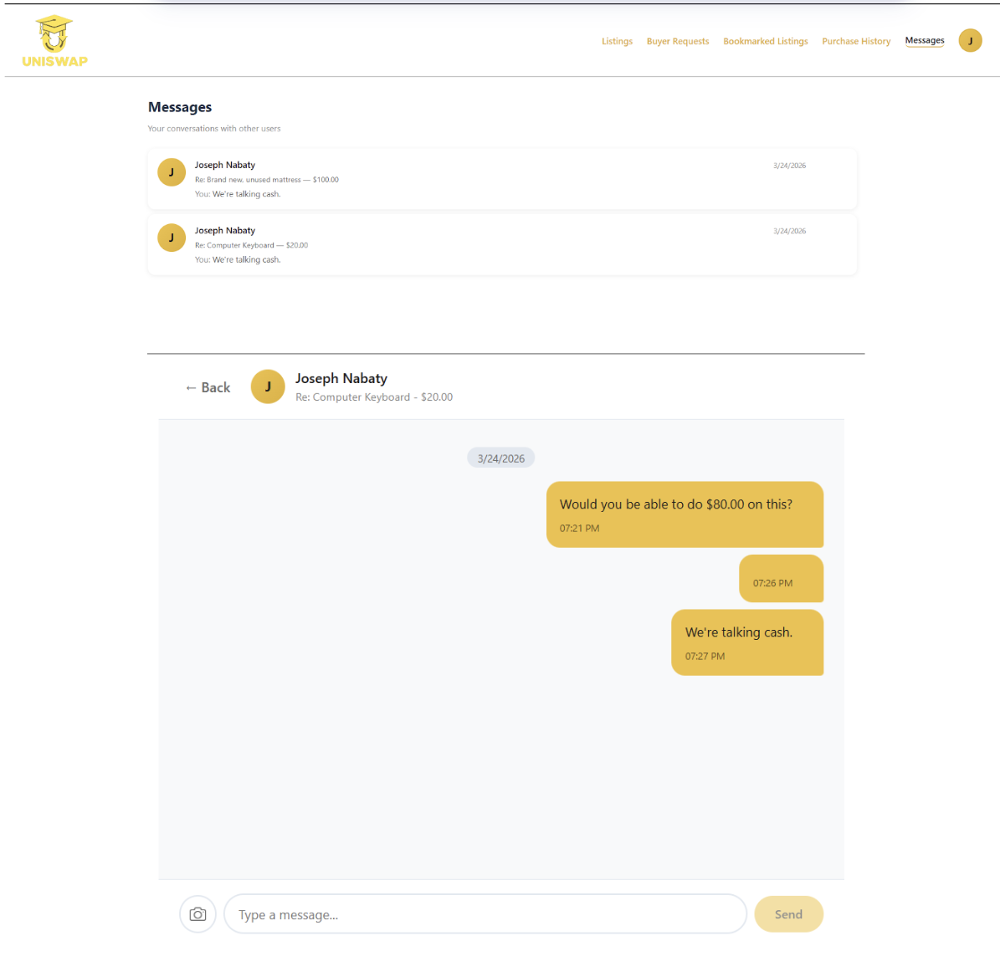
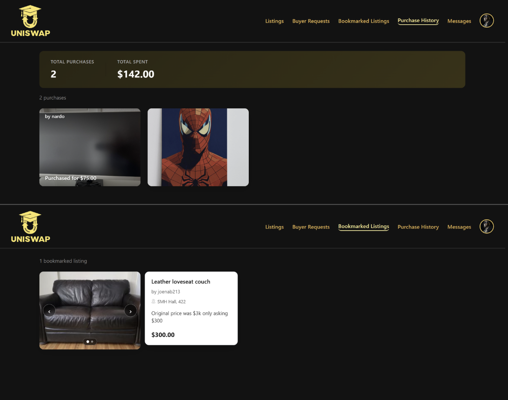

A Campus Marketplace Built for Students, by Students
A full-stack marketplace platform for university students in campus housing to buy, sell, and request items within their community - a safer, more convenient alternative to Craigslist and Facebook Marketplace.

01 Project Overview
UniSwap is a full-stack marketplace platform designed specifically for university students living in campus housing. The application allows students to buy, sell, and request items within their campus community, creating a safer and more convenient alternative to general-purpose marketplaces such as Craigslist and Facebook Marketplace.
The idea for UniSwap originated from conversations with students who expressed frustration with existing platforms. Many found it difficult to sell items before moving out of their dorms, struggled to find campus-specific listings, and felt uncomfortable meeting anonymous buyers and sellers online. The goal was to create a marketplace tailored specifically to student life and the unique needs of residential campus communities.
What began as a senior capstone project eventually expanded into a research initiative that became the foundation of an Honors College Thesis investigating how localized online marketplaces can improve safety, affordability, and sustainability within university environments.
02 The Problem
Most online marketplaces are designed for large audiences and broad geographic regions. While these platforms provide access to a large number of users, they often create challenges for students:
- Lack of campus-specific categories
- Difficulty coordinating local transactions
- Limited trust between anonymous users
- Increased safety concerns
- No features specifically designed for dorm communities
- Inefficient ways to find common student necessities
Students frequently purchase furniture, mini-fridges, microwaves, textbooks, and other dorm essentials. At the end of each semester, many of these items are discarded or sold through fragmented social media groups.
UniSwap was designed to solve these problems through a centralized marketplace focused exclusively on campus communities.
03 Research Foundation
Unlike many academic software projects, UniSwap was not built solely as an application. The platform served as the primary subject of an Honors College research study examining the following research question:
How can a localized online marketplace improve safety, affordability, and sustainability in campus commerce compared to existing platforms?
The project combined software engineering practices with academic research methods. Existing marketplace solutions were analyzed, students were consulted throughout development, and the final system was evaluated based on its ability to address the concerns identified during the research process.
This experience provided valuable insight into how software development and academic research can work together to solve real-world problems.
04 Development Process
User Research & Planning
Development began with direct conversations with students. Before any coding started, feedback was gathered regarding:
- Current buying and selling habits
- Frustrations with existing marketplaces
- Safety concerns
- Desired features
- Campus-specific challenges
Several themes emerged repeatedly:
- Students wanted a platform specifically for their university.
- Many disliked the anonymity of Craigslist.
- Existing solutions lacked organization.
- Students wanted a way to request items rather than simply browse listings.
These findings directly influenced the feature set and overall system design.
05 System Architecture
UniSwap was designed as a modern three-tier web application architecture.
Frontend
Backend
Database
Authentication
The frontend communicates with the backend through RESTful APIs, while PostgreSQL manages persistent storage for users, listings, messages, bookmarks, and transaction data.

Entity Relationship Diagram (ERD) - System Database Schema
06 Core Features
Secure User Authentication
Users can create accounts, log in securely, and maintain persistent sessions through JWT authentication.
- Account registration
- Secure login
- Session persistence
- Profile management
- Editable user information

Marketplace Listings
The listings system serves as the core of the platform. Users can create listings with:
- Title, category, price, description, location, availability status
- Up to 7 photos per listing
Additional functionality includes search, category filtering, availability filtering, detailed listing pages, and a multi-image carousel.

Buyer Requests Board
One of UniSwap's most unique features is the Buyer Requests Board. Rather than waiting for someone to list an item, users can post requests describing what they are looking for - creating a reverse marketplace model where sellers can proactively connect with buyers.
Request fields include item title, category, budget, description, and location. This feature received some of the strongest positive feedback during testing.

In-App Messaging
The platform includes a built-in messaging system that allows buyers and sellers to communicate directly without sharing personal contact information.
- Conversation management
- Listing-based messaging
- Buyer-request messaging
- Photo sharing
- Message history & date grouping
- Dark mode support

Bookmarks & Purchase History
Users can save listings for later through bookmarks and track completed purchases through their purchase history.
- Total purchases & total spending statistics
- Saved listings tracking
- Greater visibility into marketplace activity

Light/Dark Mode Toggle
A feature that you could never go wrong with was dark mode. Many students use their devices late at night, making dark mode a practical quality-of-life improvement. The preference persists between sessions and applies across the entire platform, just like my website!
07 Technical Challenges
Image Storage Redesign
One of the largest technical challenges involved image management. The original design stored uploaded images as files on the server. While this worked locally, it created privacy concerns when code was pushed to GitHub because uploaded images became visible within repository history.
Solution:
- Images are converted to Base64 in the browser
- Images are stored directly in PostgreSQL
- No uploaded files are written to disk
Although this increases database size, it improved privacy and simplified deployment during development.
Database Evolution
As new features were introduced, the database schema required multiple redesigns. Notable changes included:
- Multi-image support
- Buyer request functionality
- Conversation restructuring
- Schema migrations & relationship redesigns
These modifications required balancing flexibility, performance, and maintainability throughout development.
Team Collaboration
UniSwap was developed by a team of four computer science students as part of a senior capstone project. The project followed a structured development process involving:
- Requirement gathering & sprint planning
- Feature assignments & version control using GitHub
- Peer code reviews & collaborative testing
Working within a team environment provided experience similar to professional software development workflows and reinforced the importance of communication, documentation, and project management.
08 Results & Impact
The completed platform successfully implemented all planned feature areas:
- User Authentication
- Multi-Photo Listings
- Buyer Requests
- Messaging System
- Bookmarks
- Purchase History
- User Profiles
- Dark Mode
- User Ratings & Reviews
Student feedback was overwhelmingly positive, particularly regarding buyer requests, campus-specific design, multi-photo listings, dark mode, and safety compared to other platforms. Users frequently commented that Uniswap felt more trustworthy because it was designed around a shared campus community.
09 Future Development
While the project achieved its original goals, several opportunities for future expansion remain:
Institutional Email Verification
Require university email addresses to ensure campus-only access.
Cloud Image Storage
Migrate image handling to AWS S3 or Cloudflare R2.
Mobile Application
Develop native iOS and Android applications.
Public Deployment
Deploy to production infrastructure and expand to multiple universities.
10 Skills Demonstrated
Software Engineering
Languages
Frameworks & Tools
Research & Analysis
11 Project Reflection
UniSwap became much more than a classroom assignment. It provided the opportunity to design, build, and evaluate a real-world software solution while simultaneously conducting academic research. The project demonstrated how software engineering can be used to address practical challenges within a specific community and highlighted the value of combining technical development with user-centered research.
The experience strengthened skills in full-stack development, database design, system architecture, teamwork, and research methodology while producing a platform that addresses a meaningful problem faced by students on college campuses.
Project Demo
3-minute speedrun video of the projects capabilities/features.